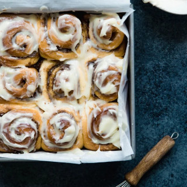

Cinnamon Rolls

The best cinnamon rolls you'll ever eat! Big, fluffy, soft and absolutely delicious. You'll
never go back to any other recipe once you try this one! This cinnamon roll recipe includes
options to make them overnight.
Ingredients
For the dough:
- ¾ cup warm milk (whole milk or 2% preferred)(110° F)
- 2 ¼ teaspoons quick rise or active yeast (¼ ounce package yeast)
- ¼ cup sugar
- 1 egg plus 1 egg yolk, at room temperature
- ¼ cup butter, melted
- 3 cups bread flour, plus more for dusting
- ¾ teaspon salt
For the filling:
- ⅔ cup brown sugar
- 1 ½ tablesppons ground cinnamon
- ¼ cup butter, softened
For the cream cheese frosting:
- 4 oz cream cheese, softened
- 3 tablespoons butter, softened
- ¾ cup powdered sugar
- ½ teaspoon vanilla extract
Directions
-
Warm milk to around 110° F. This can be done by placing in a microwave for 40-45 seconds.
It should be like warm bath water. Transfer warm milk to the bowl of an electric mixer and sprinkle
yeast on top. Add in sugar, egg, egg yolk and melted butter. Mix until well combined. Next stir in
flour and salt with a wooden spoon until a dough begins to form.
-
Place dough hook on stand mixer and knead dough on medium speed for 8 minutes. Dough should form into
a nice ball and be slightly sticky. If it's too sticky (meaning it's sticking to the bottom of the mixer)
add 2 tablespoons more bread flour. If you don't want to use an electric mixer, you can use your hands to
knead the dough for 8-10 minutes on a well-floured surface.
-
Transfer dough ball to a well-oiled bowl, cover with plastic wrap and a warm towl. Allow dough to rise for
1 hour to 1 ½ hours, or until doubled in size. This may need more or less time depending on the
humidity and temperature in your home.
-
After dough has doubled in size, transfer dough to a well-floured surfacer and roll out into a 14x9 inch rectangle.
Spread softened butter over dough, leaving a ¼ inch margin at the far side of the dough.
-
In a small bowl, mix together brown sugar and cinnamon. Use your hands to sprikle mixture over the buttered
dough, then rub the brown sugar mixture into the butter.
-
Tightly roll dough up, starting from the 9-inch side and place seam side down making sure to seal the edges
of the dough as best you can. You will probably need to cut off about an inch off the ends of the dough as the
ends won't be as full of cinnamon sugar as we'd want it to be.
-
Cut into 1 inch sections with a serrated knife or floss. You should get 9 large pieces.
-
Place cinnamon rolls in a greased 9x9 inch baking pan or rough 9 inch cake pan. (I also recommend lining the pan
with parchment paper as well, in case any of the filling ends up leaking out.) Cover with plastic wrap and a warm
towl and let rise again for 30-45 minutes.
-
Preheat oven to 350° F. Remove plastic wrap and towl and bake cinnamon rolls for 20-25 minutes or until just
slightly golden brown on the edges. You want to underbake them a little so they stay soft in the middle, that's why
we want them just slightly golden brown. Allow them to cool for 5-10 minutes before frosting. Makes 9 cinnanmon rolls.
- To make the frosting: In the bowl of an electric mixer, combine cream cheese, butter, powdered sugar and vanilla
extract. Beat until smooth and fluffy. Spread over cinnamon rolls and serve immediately. Enjoy!
Notes
To make overnight cinnamon rolls:
After placing rolls into the greased pan (after the first rise), simply cover, place overnight in the fridge and then bake
them in the morning as directed. I like to bring the cinnamon rolls to room temperature first by leaving them on the counter
for 30-45 minutes before baking (this is known as the second rise).
Home